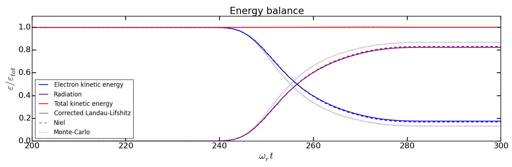
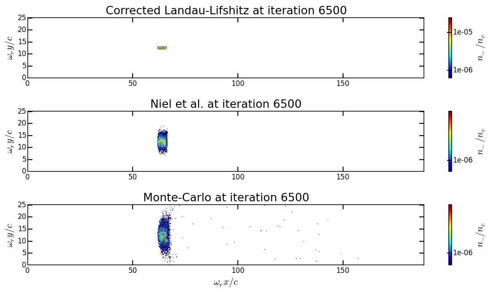

Advanced Practical 1: Synchrotron-like Radiation reaction processes¶
The goal of this tutorial is to present how to use the radiative and QED processes in Smilei. The following points will be addressed:
- How to prepare input files for these physical modules
- How to setup radiation reaction models
- How to use Smilei diagnostics
- How to read and understand generated outputs
Physical configuration¶
A multi-GeV electron beam is made to collide with a counter-propagating plane wave. This configuration is one of the most efficient to trigger radiative and QED effects. It maximizes the value of the quantum parameter for a given electron energy and a given field strength.
The simulation is 2D Cartesian with a simulation size of \(30 \lambda \times 4 \lambda\) where \(\lambda\) is the laser wavelength. The laser is injected from the left side of the simulation domain while the electron beam is initialized at the extreme right.
In this initial configuration, the laser has a wavelength of \(\lambda = 1\ \mu \mathrm{m}\), an amplitude of \(10^{22}\ \mathrm{W/cm}^2\) (\(a_0 \simeq 100\)) and is linearly polarized in the \(y\) direction. The temporal profile is Gaussian (order 4). The full width at half maximum (FWHM) is of 10 laser periods (approximately 33 fs).
The electron beam has an initial energy of 1 GeV and propagates to the left. The beam density is of \(n_b = 10^{-5} n_c\). The electron beam is frozen the time for the laser to be fully injected and so that the collision occurred at the middle of the domain. This enables to have a shorter simulation box and therefore save computational time. The beam is initialized with 32 particles per cell for a total of 12480 macro-particles.
Content of the tutorial¶
Download AdvancedPractical1.tar.gz and extract it. It contains 2 directories:
AnalysisExecution
The directory Analysis contains Python scripts that will be used to analysis
and visualize the simulation outputs.
Each script has been designed to focus on a specific quantity:
show_energy_balance.py: display the time evolution of the electron normalized kinetic energy and the radiated energy.show_2d_density.py: display the 2d colormap of the electron normalized density.show_2d_average_energy.py: display the 2d colormap of the electron average normalized energy.show_2d_average_chi.py: display the 2d colormap of the electron local quantum parameter.show_2d_fields.py: display 2D colormaps of the electric field \(E_y\) and the magnetic field \(B_z\).compare_energy_balance_Landau_Lifshitz.pycompare_energy_balance_radiation_models.pycompare_2d_density_radiation_models.pycompare_2d_average_energy_radiation_models.pycompare_2d_average_chi_radiation_models.py
The Execution directory contains the input file:
tst2d_electron_laser_collision.py
We will perform simulations step by step for each radiation model.
We will use the Python script available in Analysis to analyze the
generated outputs.
First simulation: the classical model of Landau-Lifshitz¶
Let us first use the continuous classical model of Landau-Lifshitz.
This radiation reaction model is valid in the so-called classical regime when
the particle quantum parameter chi is below \(10^{-2}\).
The version implemented in Smilei is an approximation for high
gamma factor that enables to simplify and remove some terms.
copy the directory
Executioninto a new directory calledRadiation_Landau_Lifshitzin which we will work:cp -r Execution Radiation_Landau_Lifshitz
Go into this directory and open the input file
tst2d_electron_laser_collision.py.
We will now setup the radiation reaction parameters.
Go to the block called
RadiationReaction. This block is commented. Uncomment it and the parameter calledchipa_radiation_threshold:RadiationReaction( chipa_radiation_threshold = 1e-3 # chipa_disc_min_threshold = 1e-2, # table_path = "/gpfshome/mds/staff/mlobet/smilei/databases/" )
This block is used to setup the general parameters. Only
chipa_radiation_thresholdis useful for the moment. This parameter corresponds to the minimal value of the quantum parameter at which the radiation reaction process is applied. Below this value, the particle does not undergo radiation loss. To specify this parameter is not compulsory since it is defined by default at 1e-3.Now go to the block of the first species called
electron. Only this species will be present in the simulation for the moment.Uncomment the parameter
radiation_model. This parameter corresponds to the radiation model you want to use. By default, this parameter is set toNonemeaning no radiation loss. To use the Landau-Lifshitz radiation model, use:radiation_model = "Landau-Lifshitz"
The other commented parameters are not useful for the moment.
You may now run the simulation. We recommend you to run it in parallel with at least 4 cores. By default, 16 patches have been specified. If you want to run this input file with more than 16 MPI tasks and OpenMP threads, you have to increase the number of patches accordingly.
At the end of the run, you can see that several files have been generated including
the particle binning (ParticleBinning*.h5), the fields (Fields*.h5) and
the scalar (scalars.txt) diagnostics.
We will use the python script
show_energ_balance.pyto plot the time evolution of the particle normalized kinetic energy. Copy this file from the Analysis directory to the current one:cp ../Analysis/show_energy_balance.py .
Open this file and take the time to read and understand it. You can see that the script is decomposed into several sections. The section Smilei general information will open and scan the result directory thanks to
S = happi.Open(path, verbose=False). The results are read in the section Scalar diagnostics. The commandS.Scalar("Ukin_electron")enables to select a scalar quantity object (for the electron kinetic energy here). We use the methodgetto get the raw data contains in the scalar object. We then manually plot the data via Matplotlib. This method is another approach of using the Smilei Python library and differs from what you may have seen before.Run the script in an ipython prompt:
%run show_energy_balance.py
Or you can also run it directly in your terminal by adding the interactive option:
python -i show_energy_balance.py
You obtain a plot of the time evolution of the electron normalized energy and the radiated energy (purple). There is no positron or photons here.
What do you observe? You can see that during the laser interaction (starting from \(t = 240 \omega_r^{-1}\)), the electron kinetic energy is rapidly converted into radiations via the radiative model.
Estimate the maximal quantum parameter reached during the simulation. For this aim, you can use the python script
Analysis/show_2d_average_chi.py. Copy this script in the current working directory and run it in ipython:%run show_2d_average_chi.py
You obtain a 2D colormap of the beam. The color corresponds to the local value of the quantum parameter. The terminal gives the maximal value. What do you think about this value regarding the model validity?
Open the python script
show_2d_average_chi.py. Take the time to read it to understand. In the parameters section, change thetimestepvalue and run again the script to see how the quantum parameter evolves. Particle binning diagnostics are output every 500 iterations. By this way you can see when the beam starts to radiate while entering the laser field. The maximal available iteration is 8000.Similarly, use the Python script
show_2d_density.py(located inAnalysis) to plot a 2D colormap of the electron density andshow_2d_average_energy.pyto plot the 2D colormap of the local average kinetic energy. Copy these scripts in the current working directory and use ipython to run them as in the previous item. Open them and change thetimestepparameter.
Second simulation: the corrected Landau-Lifshitz model¶
We will now perform the same simulation with the corrected Landau-Lifshitz model. This model includes a quantum correction that extends the domain of validity to higher quantum parameters, around \(\chi \sim 10^{-1}\).
- copy the previous working directory
Radiation_Landau_Lifshitzinto a new directory calledRadiation_corrected_Landau_Lifshitzin which we will now work:
cp -r Radiation_Landau_Lifshitz Radiation_corrected_Landau_Lifshitz
cd Radiation_corrected_Landau_Lifshitz
- Open the input file script
tst2d_electron_laser_collision. Go to theelectronspecies block. To use thecorrected Landau-Lifshitzradiation model, simply use:
radiation_model = "corrected-Landau-Lifshitz"
This radiative model requires the same global setup as the Landau-Lifshitz one.
You can run the simulation.
Compare the evolution of the energy balance to the
Landau-Lifshitzmodel. For this aim you can copy the scriptshow_energy_balance.pyin the current working directory and run it using ipython:%run show_energy_balance.py
Compare the generated plot with the one from the
Landau-Lifshitzsimulation.Optional exercice: using
show_energy_balance.py, create you own python script to plot on the same figure the time evolution of the energy balance for the classical Landau-Lifshitz and the corrected Landau-Lifshitz model.Solution: See the Python script
Analysis/compare_energy_balance_Landau-Lifshitz.py.
Question: What do you observe? You can see that the energy drops less rapidly with the corrected Landau-Lifshitz model. This means that we are out of the validity scope of the classical Landau-Lifshitz model with the current laser and electron parameters.
Optional exercice: as for the previous model, use the Python scripts to plot 2D colormap of the density (
show_2d_density.py), the normalized kinetic energy (show_2d_average_energy.py) and the quantum parameter (show_2d_average_chi.py).
Third simulation: the stochastic model of Niel et al.¶
The model of Niel et al. is the first stochastic model available in Smilei. It is an extension of the corrected Landau-Lifshitz model with an additional stochastic operator derived from a Fokker-Planck approach.
Copy the previous working directory
Radiation_Landau_Lifshitzinto a new directory calledRadiation_Nielin which we will now work:cp -r Radiation_Landau_Lifshitz Radiation_Niel cd Radiation_NielOpen the input file
tst2d_electron_laser_collision.pyand go to theelectronspecies block. Modify theradiation_modelbyradiation_model = "Niel"
The Niel radiation model uses tabulated values. External Tables are available in the
SMILEI/databasesdirectory in the sources. In order to specify in the input file where these tables are located, we have to modify the blockRadiationReactionpreviously uncommented. Uncomment the table_path parameter as follow:RadiationReaction( chipa_radiation_threshold = 1e-3 # chipa_disc_min_threshold = 1e-2, table_path = "<path_to_smilei>/databases/" )
And update the path to Smilei according to your installation configuration.
You can run the simulation
By looking at the standart output (the log) that contains the simulation output, you can check that the external tables have been well read.
Use the script
show_energ_balance.pyto plot the evolution of the energy balance for this simulation. Compare the results to the corrected Landau-Lifshitz model.Optional exercice: as for the previous model, use the Python scripts to plot 2D colormap of the density (
show_2d_density.py), the normalized kinetic energy (show_2d_average_energy.py) and the quantum parameter (show_2d_average_chi.py).
Fourth simulation: the Monte-Carlo model¶
The Monte-Carlo model is the second stochastic one of the list of implemented models.
You can have more information about the model and its implementation on the page
Synchrotron-like radiation reaction fn the Smilei website.
copy the previous working directory
Radiation_Nielinto a new directory calledRadiation_Monte-Carloin which we will now work:cp -r Radiation_Niel Radiation_Monte_Carlo cd Radiation_Monte_CarloOpen the input file
tst2d_electron_laser_collision.pyand go to theelectronspecies block. Modify theradiation_modelbyradiation_model = "Monte-Carlo"
Like the Niel radiation model, the Monte-Carlo algorithm uses tabulated values. The same path needs to be specified in the block
RadiationReaction. In addition, set the parameterchipa_disc_min_thresholdto1e-2(uncomment the corresponding line). The Monte-Carlo model is built to work with the continuous corrected Landau-Lifshitz approach when the particle quantum parameter is too low. This parameter corresponds to this threshold. Above this value, a particle undergoes radiation reaction via the Monte-Carlo engine. Below the continuous approach is used.RadiationReaction( chipa_radiation_threshold = 1e-3 chipa_disc_min_threshold = 1e-3, table_path = "<path_to_smilei>/databases/" )
In fact, the default value of
chipa_disc_min_thresholdis1e-2. Therefore, it has to be specified only to change the default value. The Monte-Carlo radiation reaction is now fully set.You can now run the simulation
Use the script
show_energ_balance.pyto plot the evolution of the energy balance for this simulation.Optional exercice: as for the previous model, use the Python scripts to plot 2D colormap of the density (
show_2d_density.py), the normalized kinetic energy (show_2d_average_energy.py) and the quantum parameter (show_2d_average_chi.py).
Comparison of the radiation reaction models¶
Optional exercice: Using
show_energy_balance.py, create you own python script to plot on the same figure the time evolution of the energy balance for the corrected Landau-Lifshitz, the Niel and the Monte-Carlo radiative models. The solution is given in the next point.Solution: The solution is the Python script
Analysis/compare_energy_balance_radiation_models.py. Go to the directoryAnalysisto run it. You should obtain the following figure:Optional exercice: Using the script
show_2d_density.py, create a new script to compare on the same figure the electron density of the corrected Landau-Lifshitz, the Niel and the Monte-Carlo radiative simulation cases. Observe the shape of the beam after the laser interaction in each case. Do the same thing for the average local kinetic energy and the average local quantum parameter usingshow_2d_kinetic_energy.pyandshow_2d_average_chi.py. See the next point for the solution.Solutions: Solutions are the Python script
Analysis/compare_2d_density_radiation_models.py,Analysis/compare_2d_kinetic_energy_radiation_models.py,Analysis/compare_2d_average_chi_radiation_models.py. Go to the directoryAnalysisto run the solutions. The beam density at iteration 6500 at the end of the interaction should look like the following figure:With the script to compare the quantum parameter space-distribution, you can also have the maximum value of the quantum parameter.
Optional exercice: Activate the track particle option to follow trajectories of some particles in the corrected Landau-Lifshitz, the Niel and the Monte-Carlo simulation cases and run them again. Create a python script to read and plot the particle trajectories. Describe the difference due to the stochasticity.
Optional exercice: Play with the laser and electron beam parameters (laser amplitude, duration, profile and electron energy) to see how the different models behave. Use the previous scripts to compute the maximum value of the quantum parameter in each case and see the electron beam properties after the laser interaction.